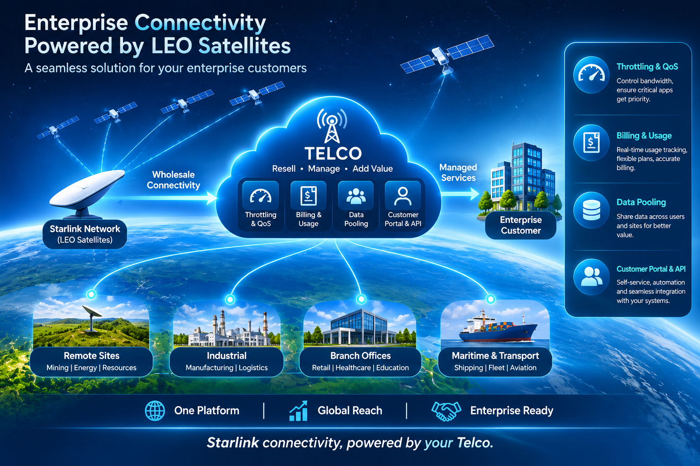

Turn Starlink connectivity into a revenue engine
Meridien is the enterprise platform for packaging, managing and billing Starlink-enabled services, so you can resell, bundle and monetise satellite connectivity with confidence.

Value comes from the service, not the hardware
Satellite broadband is reaching enterprises, remote operations and communities that terrestrial networks cannot serve. Capturing value from it takes more than hardware: it needs provisioning, customer management, usage tracking, billing and support working together.
One platform from plan to invoice
Service packaging
Create plans, bundles and enterprise offers tailored to different customer segments and use cases.
Customer and subscription management
Onboard customers, manage terminals and subscriptions, and handle changes from one console.
Usage metering and billing
Capture consumption data and automate invoicing, reconciliation and revenue reporting.
Multi-tenant partner model
Support resellers, channel partners and enterprise sub-accounts with clear permissions and white-label options.
Operational visibility
Dashboards for utilisation, service health, margins and revenue performance.
AI-driven insight
Forecast demand, flag unusual usage, and identify upsell opportunities.
Operators, ISPs and integrators
Telecom operators, ISPs, system integrators, enterprise connectivity providers and distributors serving remote and underserved markets.